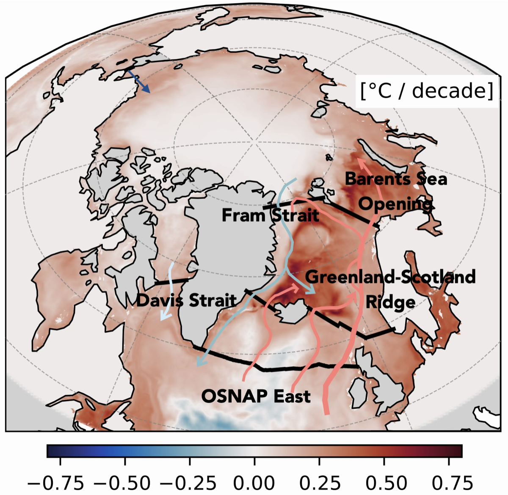
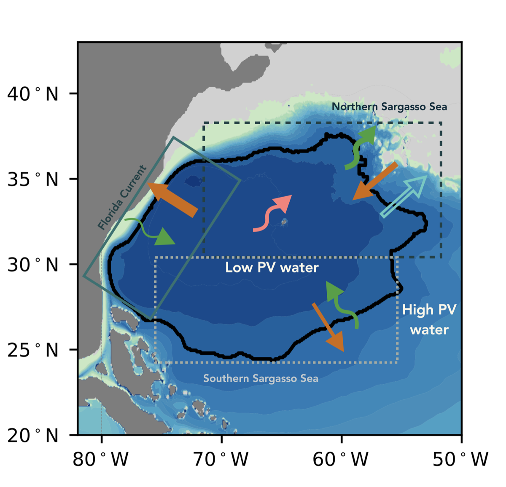
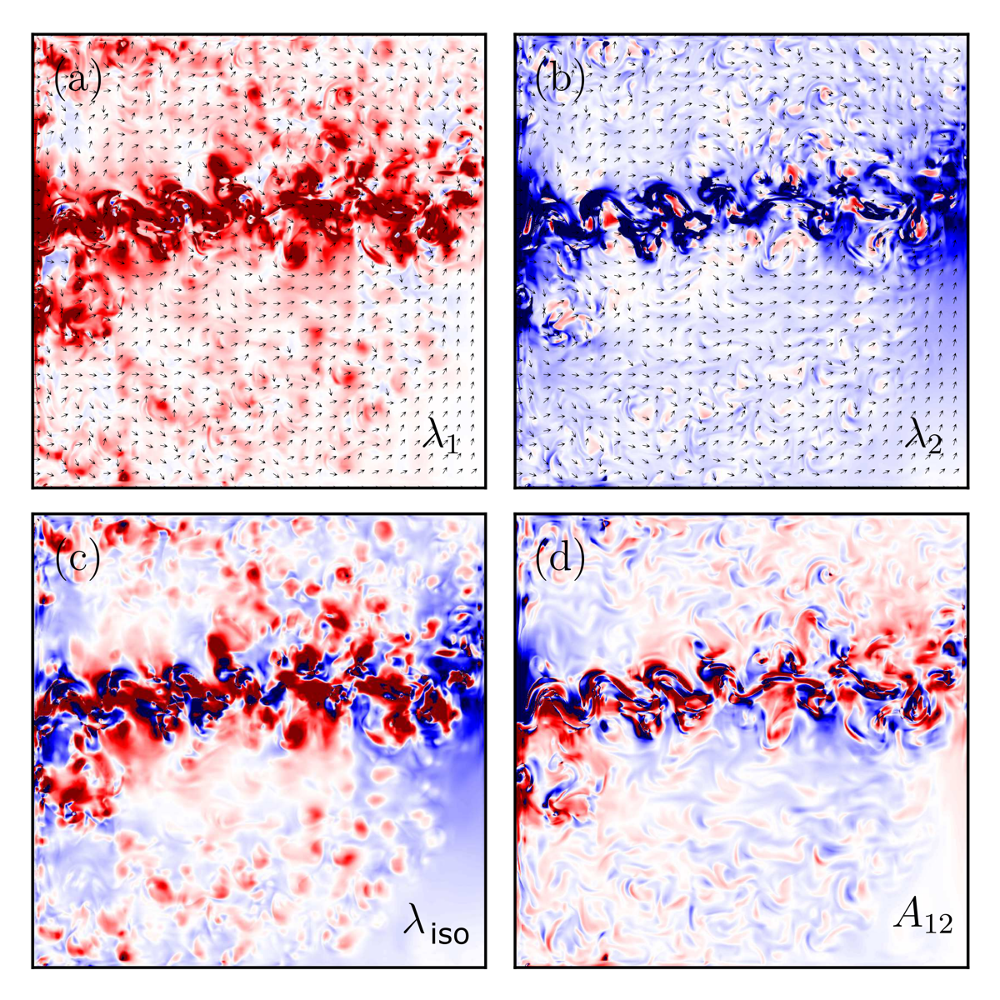

Decadal trend of sea surface temperature anomaly (°C per decade) in the Arctic Ocean and subpolar North Atlantic, from a 1/12° HYCOM historical simulation over 1980–2023.
The Arctic Ocean is experiencing rapid warming, with consequences extending beyond the Arctic itself. The large-scale impacts of this transformation are closely linked to the subpolar North Atlantic through exchanges of heat and freshwater: warmer, saltier Atlantic Water carries heat northward into the Arctic, while colder, fresher water is exported southward. However, the key physical processes governing these exchanges are not yet fully understood.
With a focus on the Atlantic Meridional Overturning Circulation, I use high-resolution ocean simulations to study changes in heat and freshwater transport across major sections from the subpolar North Atlantic to the Arctic gateways.

Schematic of STMW formation in its core isopycnal layer (Sun et al., 2026). Arrows show how the residual-mean (orange), residual-eddy (green), diabatic (cyan) and bolus (pink) PV fluxes maintain the low-PV pool (outlined in black).
Ventilated each winter, North Atlantic Subtropical Mode Water (STMW) carries the imprint of atmospheric conditions into the ocean interior. Its formation is generally attributed to a balance between mean-circulation and down-gradient eddy transport of potential vorticity (PV), but how the two interact in space and time has not been explicitly diagnosed.
Presenting the first fully space- and time-dependent diagnosis of STMW formation and erosion, we find that strong western boundary current dynamics play the dominant role in maintaining STMW, with residual eddies playing a secondary role (Sun et al., 2026, accepted).
Interestingly, we also find a partial cancellation between Eulerian-mean and bolus-eddy flows within the STMW region, similar to that in the Antarctic Circumpolar Current. Happy to discuss this further with anyone interested!

Components of the eddy transport tensor estimated from multiple passive tracers: (a, b) the two eigenvalues of the diffusion tensor, whose opposite signs (polarity) indicate simultaneous down- and up-gradient transport; (c) isotropic diffusivity; and (d) advective coefficient.
Mesoscale eddies stir and mix heat, carbon, and nutrients throughout the ocean, influencing large-scale ocean circulation, stratification, and biogeochemical processes. Their transport effects are usually parameterised because climate models can be too coarse to resolve them. Eddy diffusivity is commonly assumed to be a unique property of the flow, independent of the tracer being transported. But how valid is this assumption?
To test this, I used an idealised eddy-resolving quasi-geostrophic model to estimate the full eddy transport tensor (K-tensor) for multiple passive tracers and measure its tracer dependence (Sun et al., 2021). With collaborators, I also explored its spatial inhomogeneity, anisotropy, and advective component (Haigh et al., 2020, 2021a, 2021b; Kamenkovich et al., 2021), identifying key properties that should be represented in eddy parameterisations.